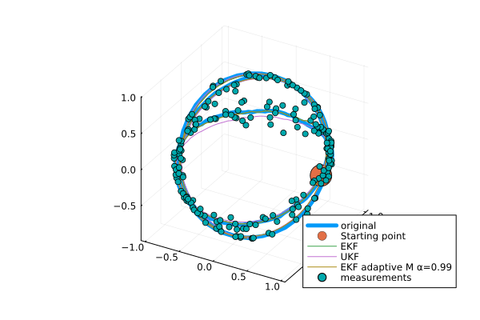

GeometricKalman
Kalman filters on manifolds with an affine connection, unifying the Lie group and Riemannian approaches.

arXiv preprint: https://arxiv.org/abs/2506.01086
Getting started
Basic setting (example: a car driving on a sphere)
using Manifolds
using RecursiveArrayTools
using LinearAlgebra
using Distributions
using GeometricKalman
using GeometricKalman: gen_car_sphere_data, car_sphere_f, car_sphere_h
M = TangentBundle(Manifolds.Sphere(2)) # state manifold
M_obs = Manifolds.Sphere(2) # observation manifold
retraction = Manifolds.FiberBundleProductRetraction()
inverse_retraction = Manifolds.FiberBundleInverseProductRetraction()Manifolds.FiberBundleInverseProductRetraction()Generating data using the gen_car_sphere_data function.
dt = 0.01
vt = 5
times, samples, controls, measurements = gen_car_sphere_data(;
vt = vt,
N = 200,
noise_f_distr = MvNormal(
[0.0, 0.0, 0.0, 0.0],
1e4 * diagm([1e-3, 1e-3, 1e-2, 1e-2]),
),
noise_h_distr = MvNormal([0.0, 0.0], diagm([0.01, 0.01])),
retraction = retraction,
)([0.0, 0.01, 0.02, 0.03, 0.04, 0.05, 0.06, 0.07, 0.08, 0.09 … 1.91, 1.92, 1.93, 1.94, 1.95, 1.96, 1.97, 1.98, 1.99, 2.0], RecursiveArrayTools.ArrayPartition{Float64, Tuple{Vector{Float64}, Vector{Float64}}}[RecursiveArrayTools.ArrayPartition{Float64, Tuple{Vector{Float64}, Vector{Float64}}}(([1.0, 0.0, 0.0], [0.0, 1.0, 0.0])), RecursiveArrayTools.ArrayPartition{Float64, Tuple{Vector{Float64}, Vector{Float64}}}(([0.9988353345042263, 0.04821982716416343, -0.0016801232360875403], [-0.04842710614900265, 1.0031178485662917, -0.00031871843991551586])), RecursiveArrayTools.ArrayPartition{Float64, Tuple{Vector{Float64}, Vector{Float64}}}(([0.9943025259720827, 0.1065344167365964, 0.0035923385320951505], [-0.1072546639040319, 1.0010737391463387, -0.0014541135715612037])), RecursiveArrayTools.ArrayPartition{Float64, Tuple{Vector{Float64}, Vector{Float64}}}(([0.9863008871415103, 0.1648049240199952, -0.007063783875058103], [-0.1661637894720212, 0.9944312575008178, -4.602795397605963e-5])), RecursiveArrayTools.ArrayPartition{Float64, Tuple{Vector{Float64}, Vector{Float64}}}(([0.9776303174591402, 0.21016035183483647, -0.008461022479518854], [-0.21296346818249717, 0.9907765205992825, 0.0026473339883334225])), RecursiveArrayTools.ArrayPartition{Float64, Tuple{Vector{Float64}, Vector{Float64}}}(([0.9640950517436931, 0.2648666933229303, -0.019140688898336068], [-0.26766666836758235, 0.9749897471003421, 0.009727959600117362])), RecursiveArrayTools.ArrayPartition{Float64, Tuple{Vector{Float64}, Vector{Float64}}}(([0.9481333367439403, 0.3175647081372442, -0.013993995158966446], [-0.32004070261892914, 0.9560855621858911, 0.01270353746844216])), RecursiveArrayTools.ArrayPartition{Float64, Tuple{Vector{Float64}, Vector{Float64}}}(([0.9292129208111449, 0.36951858689194567, -0.004400197609285535], [-0.37430769470281977, 0.9414573708709006, 0.01691992790754824])), RecursiveArrayTools.ArrayPartition{Float64, Tuple{Vector{Float64}, Vector{Float64}}}(([0.9008771652515617, 0.43401905049737244, -0.00691353264763001], [-0.43946908816274904, 0.9124987825710916, 0.019409589656524062])), RecursiveArrayTools.ArrayPartition{Float64, Tuple{Vector{Float64}, Vector{Float64}}}(([0.872392528025437, 0.48879046499206524, -0.0038933761991218232], [-0.4941068267550209, 0.8820807294810089, 0.025054402948564414])) … RecursiveArrayTools.ArrayPartition{Float64, Tuple{Vector{Float64}, Vector{Float64}}}(([-0.988875495046954, -0.14499082097767277, -0.0332101961430986], [0.3502340445653901, -1.6485137618739987, -3.23149252152478])), RecursiveArrayTools.ArrayPartition{Float64, Tuple{Vector{Float64}, Vector{Float64}}}(([-0.9549974150271782, -0.23554815987359212, -0.18026924771455938], [0.979843621519904, -1.5233335786687423, -3.2003778329780284])), RecursiveArrayTools.ArrayPartition{Float64, Tuple{Vector{Float64}, Vector{Float64}}}(([-0.8836014768971915, -0.3204609913212392, -0.3413988621341782], [1.6569939513204055, -1.3218889800481193, -3.04777948915552])), RecursiveArrayTools.ArrayPartition{Float64, Tuple{Vector{Float64}, Vector{Float64}}}(([-0.7943141729181287, -0.3704710858870079, -0.48147291639623035], [2.2184064953286113, -1.0985243862477052, -2.8145720187745416])), RecursiveArrayTools.ArrayPartition{Float64, Tuple{Vector{Float64}, Vector{Float64}}}(([-0.6591846966360457, -0.4231704421464277, -0.6216126708927691], [2.797505199188137, -0.792749012446994, -2.4269207122010155])), RecursiveArrayTools.ArrayPartition{Float64, Tuple{Vector{Float64}, Vector{Float64}}}(([-0.5173243058652668, -0.4380743081452895, -0.7351642422643028], [3.232624455414529, -0.49365866245694784, -1.9805860266271986])), RecursiveArrayTools.ArrayPartition{Float64, Tuple{Vector{Float64}, Vector{Float64}}}(([-0.3426457098193685, -0.45366140472759175, -0.8226695858015962], [3.5912401141119794, -0.15357420376888187, -1.4110796716629077])), RecursiveArrayTools.ArrayPartition{Float64, Tuple{Vector{Float64}, Vector{Float64}}}(([-0.16212848410805283, -0.46379348639451917, -0.8709821792774192], [3.8105165790723694, 0.18255206642529606, -0.8065144760508078])), RecursiveArrayTools.ArrayPartition{Float64, Tuple{Vector{Float64}, Vector{Float64}}}(([0.02721132913118185, -0.4426808632033952, -0.8962662533647084], [3.8967781260827468, 0.5267212585595338, -0.1418472566488037])), RecursiveArrayTools.ArrayPartition{Float64, Tuple{Vector{Float64}, Vector{Float64}}}(([0.23262823159702697, -0.41742758121222173, -0.878429462340235], [3.8297963935270998, 0.8830527274359168, 0.5945932151626186]))], Any[0.0, 0.004999979166692708, 0.009999833334166664, 0.01499943750632809, 0.01999866669333308, 0.024997395914712332, 0.02999550020249566, 0.034992854604336196, 0.03998933418663416, 0.044984814037660234 … 0.8163137404456835, 0.8191915683009983, 0.8220489164097717, 0.8248857133384501, 0.8277018881672576, 0.8304973704919705, 0.8332720904256761, 0.8360259786005205, 0.838758966169443, 0.8414709848078965], [[0.9987485666441063, -0.04655918948593107, -0.01826314597095505], [0.9890908932726822, -0.14724533156665948, -0.0042446645181901015], [0.9910446298200453, -0.019070983961835722, 0.13216217036496108], [0.9772088356114896, 0.16841760322468569, -0.1292222988763523], [0.9803958843155098, 0.19063633459735574, -0.04981664328811082], [0.9607610806818787, 0.2608581136617901, 0.09429310888819796], [0.901412800792152, 0.42562196837031685, -0.0793782250281871], [0.9475793792731387, 0.27493773493226875, -0.16279607454311307], [0.9133508874654315, 0.40678722219578584, -0.01772885287730857], [0.9478701112723065, 0.3186030020730426, -0.0058633801403551265] … [-0.9622492484587342, -0.17268341368333479, -0.21037305549730623], [-0.9830105080150332, -0.1529377638072105, -0.10149079531502987], [-0.8815245856592177, -0.356447135252817, -0.30961241035915454], [-0.8764582438805417, -0.25863421776484297, -0.4061148706154526], [-0.6911124853135058, -0.4450372047614618, -0.569478198899567], [-0.5913535681365302, -0.30922980105315334, -0.7447670022180239], [-0.2921895662912294, -0.3405759518159666, -0.8936628438036306], [-0.1572013956821181, -0.5219692805805329, -0.83835302309101], [0.05589336851737447, -0.5263720181324633, -0.8484152461400839], [0.20015725993006261, -0.3267780101849469, -0.9236629273478807]])Setting initial conditions for filters
p0 = ArrayPartition([1.0, 0.0, 0.0], [0.0, 1.0, 0.0])
P0 = diagm([0.1, 0.1, 0.1, 0.1])
Q = diagm([0.1, 0.1, 0.01, 0.01])
R = diagm([0.01, 0.01])2×2 Matrix{Float64}:
0.01 0.0
0.0 0.01Adapting system dynamics to the interface expected by Kalman filters.
car_f_adapted(p, q, noise, t::Real) = car_sphere_f(p, q, noise, t::Real; vt = vt)
f_tilde = GeometricKalman.default_discretization(
M,
car_f_adapted;
dt = dt,
retraction = retraction,
)(::GeometricKalman.var"#tilde_f#27"{Float64, Manifolds.FiberBundleProductRetraction, FiberBundle{ℝ, TangentSpaceType, Sphere{ManifoldsBase.TypeParameter{Tuple{2}}, ℝ}, Manifolds.FiberBundleProductVectorTransport{ParallelTransport, ParallelTransport}}, typeof(Main.car_f_adapted)}) (generic function with 1 method)Filter-specific settings
sp = WanMerweSigmaPoints(; α = 1.0)
filter_params = [
( # extended Kalman filter
"EKF",
(;
propagator = EKFPropagator(M, f_tilde; B_M = DefaultOrthonormalBasis()),
updater = EKFUpdater(
M,
M_obs,
car_sphere_h;
B_M = DefaultOrthonormalBasis(),
B_M_obs = DefaultOrthonormalBasis(),
),
),
),
( # unscented Kalman filter
"UKF",
(;
propagator = UnscentedPropagator(
M;
sigma_points = sp,
inverse_retraction_method = inverse_retraction,
),
updater = UnscentedUpdater(; sigma_points = sp),
),
),
( # adaptive extended Kalman filter
"EKF adaptive M α=0.99",
(;
propagator = EKFPropagator(M, f_tilde; B_M = DefaultOrthonormalBasis()),
updater = EKFUpdater(
M,
M_obs,
car_sphere_h;
B_M = DefaultOrthonormalBasis(),
B_M_obs = DefaultOrthonormalBasis(),
),
measurement_covariance_adapter = CovarianceMatchingMeasurementCovarianceAdapter(
0.99,
),
),
),
]3-element Vector{Tuple{String, NamedTuple}}:
("EKF", (propagator = EKFPropagator{GeometricKalman.var"#jacobian_p#3"{DefaultOrthonormalBasis{ℝ, TangentSpaceType}, DefaultOrthonormalBasis{ℝ, TangentSpaceType}, Manifolds.FiberBundleProductRetraction, Manifolds.FiberBundleInverseProductRetraction, FiberBundle{ℝ, TangentSpaceType, Sphere{ManifoldsBase.TypeParameter{Tuple{2}}, ℝ}, Manifolds.FiberBundleProductVectorTransport{ParallelTransport, ParallelTransport}}, FiberBundle{ℝ, TangentSpaceType, Sphere{ManifoldsBase.TypeParameter{Tuple{2}}, ℝ}, Manifolds.FiberBundleProductVectorTransport{ParallelTransport, ParallelTransport}}, GeometricKalman.var"#tilde_f#27"{Float64, Manifolds.FiberBundleProductRetraction, FiberBundle{ℝ, TangentSpaceType, Sphere{ManifoldsBase.TypeParameter{Tuple{2}}, ℝ}, Manifolds.FiberBundleProductVectorTransport{ParallelTransport, ParallelTransport}}, typeof(Main.car_f_adapted)}}}(GeometricKalman.var"#jacobian_p#3"{DefaultOrthonormalBasis{ℝ, TangentSpaceType}, DefaultOrthonormalBasis{ℝ, TangentSpaceType}, Manifolds.FiberBundleProductRetraction, Manifolds.FiberBundleInverseProductRetraction, FiberBundle{ℝ, TangentSpaceType, Sphere{ManifoldsBase.TypeParameter{Tuple{2}}, ℝ}, Manifolds.FiberBundleProductVectorTransport{ParallelTransport, ParallelTransport}}, FiberBundle{ℝ, TangentSpaceType, Sphere{ManifoldsBase.TypeParameter{Tuple{2}}, ℝ}, Manifolds.FiberBundleProductVectorTransport{ParallelTransport, ParallelTransport}}, GeometricKalman.var"#tilde_f#27"{Float64, Manifolds.FiberBundleProductRetraction, FiberBundle{ℝ, TangentSpaceType, Sphere{ManifoldsBase.TypeParameter{Tuple{2}}, ℝ}, Manifolds.FiberBundleProductVectorTransport{ParallelTransport, ParallelTransport}}, typeof(Main.car_f_adapted)}}(DefaultOrthonormalBasis(ℝ), DefaultOrthonormalBasis(ℝ), Manifolds.FiberBundleProductRetraction(), Manifolds.FiberBundleInverseProductRetraction(), TangentBundle(Sphere(2, ℝ)), TangentBundle(Sphere(2, ℝ)), GeometricKalman.var"#tilde_f#27"{Float64, Manifolds.FiberBundleProductRetraction, FiberBundle{ℝ, TangentSpaceType, Sphere{ManifoldsBase.TypeParameter{Tuple{2}}, ℝ}, Manifolds.FiberBundleProductVectorTransport{ParallelTransport, ParallelTransport}}, typeof(Main.car_f_adapted)}(0.01, Manifolds.FiberBundleProductRetraction(), TangentBundle(Sphere(2, ℝ)), Main.car_f_adapted))), updater = EKFUpdater{GeometricKalman.var"#jacobian_p#3"{DefaultOrthonormalBasis{ℝ, TangentSpaceType}, DefaultOrthonormalBasis{ℝ, TangentSpaceType}, Manifolds.FiberBundleProductRetraction, LogarithmicInverseRetraction, FiberBundle{ℝ, TangentSpaceType, Sphere{ManifoldsBase.TypeParameter{Tuple{2}}, ℝ}, Manifolds.FiberBundleProductVectorTransport{ParallelTransport, ParallelTransport}}, Sphere{ManifoldsBase.TypeParameter{Tuple{2}}, ℝ}, typeof(GeometricKalman.car_sphere_h)}}(GeometricKalman.var"#jacobian_p#3"{DefaultOrthonormalBasis{ℝ, TangentSpaceType}, DefaultOrthonormalBasis{ℝ, TangentSpaceType}, Manifolds.FiberBundleProductRetraction, LogarithmicInverseRetraction, FiberBundle{ℝ, TangentSpaceType, Sphere{ManifoldsBase.TypeParameter{Tuple{2}}, ℝ}, Manifolds.FiberBundleProductVectorTransport{ParallelTransport, ParallelTransport}}, Sphere{ManifoldsBase.TypeParameter{Tuple{2}}, ℝ}, typeof(GeometricKalman.car_sphere_h)}(DefaultOrthonormalBasis(ℝ), DefaultOrthonormalBasis(ℝ), Manifolds.FiberBundleProductRetraction(), LogarithmicInverseRetraction(), TangentBundle(Sphere(2, ℝ)), Sphere(2, ℝ), GeometricKalman.car_sphere_h))))
("UKF", (propagator = UnscentedPropagator{WanMerweSigmaPoints{Float64}, Manifolds.FiberBundleInverseProductRetraction, GradientDescentEstimation}(WanMerweSigmaPoints{Float64}(1.0, 2.0, 0.0), Manifolds.FiberBundleInverseProductRetraction(), GradientDescentEstimation()), updater = UnscentedUpdater{WanMerweSigmaPoints{Float64}, LogarithmicInverseRetraction}(WanMerweSigmaPoints{Float64}(1.0, 2.0, 0.0), LogarithmicInverseRetraction())))
("EKF adaptive M α=0.99", (propagator = EKFPropagator{GeometricKalman.var"#jacobian_p#3"{DefaultOrthonormalBasis{ℝ, TangentSpaceType}, DefaultOrthonormalBasis{ℝ, TangentSpaceType}, Manifolds.FiberBundleProductRetraction, Manifolds.FiberBundleInverseProductRetraction, FiberBundle{ℝ, TangentSpaceType, Sphere{ManifoldsBase.TypeParameter{Tuple{2}}, ℝ}, Manifolds.FiberBundleProductVectorTransport{ParallelTransport, ParallelTransport}}, FiberBundle{ℝ, TangentSpaceType, Sphere{ManifoldsBase.TypeParameter{Tuple{2}}, ℝ}, Manifolds.FiberBundleProductVectorTransport{ParallelTransport, ParallelTransport}}, GeometricKalman.var"#tilde_f#27"{Float64, Manifolds.FiberBundleProductRetraction, FiberBundle{ℝ, TangentSpaceType, Sphere{ManifoldsBase.TypeParameter{Tuple{2}}, ℝ}, Manifolds.FiberBundleProductVectorTransport{ParallelTransport, ParallelTransport}}, typeof(Main.car_f_adapted)}}}(GeometricKalman.var"#jacobian_p#3"{DefaultOrthonormalBasis{ℝ, TangentSpaceType}, DefaultOrthonormalBasis{ℝ, TangentSpaceType}, Manifolds.FiberBundleProductRetraction, Manifolds.FiberBundleInverseProductRetraction, FiberBundle{ℝ, TangentSpaceType, Sphere{ManifoldsBase.TypeParameter{Tuple{2}}, ℝ}, Manifolds.FiberBundleProductVectorTransport{ParallelTransport, ParallelTransport}}, FiberBundle{ℝ, TangentSpaceType, Sphere{ManifoldsBase.TypeParameter{Tuple{2}}, ℝ}, Manifolds.FiberBundleProductVectorTransport{ParallelTransport, ParallelTransport}}, GeometricKalman.var"#tilde_f#27"{Float64, Manifolds.FiberBundleProductRetraction, FiberBundle{ℝ, TangentSpaceType, Sphere{ManifoldsBase.TypeParameter{Tuple{2}}, ℝ}, Manifolds.FiberBundleProductVectorTransport{ParallelTransport, ParallelTransport}}, typeof(Main.car_f_adapted)}}(DefaultOrthonormalBasis(ℝ), DefaultOrthonormalBasis(ℝ), Manifolds.FiberBundleProductRetraction(), Manifolds.FiberBundleInverseProductRetraction(), TangentBundle(Sphere(2, ℝ)), TangentBundle(Sphere(2, ℝ)), GeometricKalman.var"#tilde_f#27"{Float64, Manifolds.FiberBundleProductRetraction, FiberBundle{ℝ, TangentSpaceType, Sphere{ManifoldsBase.TypeParameter{Tuple{2}}, ℝ}, Manifolds.FiberBundleProductVectorTransport{ParallelTransport, ParallelTransport}}, typeof(Main.car_f_adapted)}(0.01, Manifolds.FiberBundleProductRetraction(), TangentBundle(Sphere(2, ℝ)), Main.car_f_adapted))), updater = EKFUpdater{GeometricKalman.var"#jacobian_p#3"{DefaultOrthonormalBasis{ℝ, TangentSpaceType}, DefaultOrthonormalBasis{ℝ, TangentSpaceType}, Manifolds.FiberBundleProductRetraction, LogarithmicInverseRetraction, FiberBundle{ℝ, TangentSpaceType, Sphere{ManifoldsBase.TypeParameter{Tuple{2}}, ℝ}, Manifolds.FiberBundleProductVectorTransport{ParallelTransport, ParallelTransport}}, Sphere{ManifoldsBase.TypeParameter{Tuple{2}}, ℝ}, typeof(GeometricKalman.car_sphere_h)}}(GeometricKalman.var"#jacobian_p#3"{DefaultOrthonormalBasis{ℝ, TangentSpaceType}, DefaultOrthonormalBasis{ℝ, TangentSpaceType}, Manifolds.FiberBundleProductRetraction, LogarithmicInverseRetraction, FiberBundle{ℝ, TangentSpaceType, Sphere{ManifoldsBase.TypeParameter{Tuple{2}}, ℝ}, Manifolds.FiberBundleProductVectorTransport{ParallelTransport, ParallelTransport}}, Sphere{ManifoldsBase.TypeParameter{Tuple{2}}, ℝ}, typeof(GeometricKalman.car_sphere_h)}(DefaultOrthonormalBasis(ℝ), DefaultOrthonormalBasis(ℝ), Manifolds.FiberBundleProductRetraction(), LogarithmicInverseRetraction(), TangentBundle(Sphere(2, ℝ)), Sphere(2, ℝ), GeometricKalman.car_sphere_h)), measurement_covariance_adapter = CovarianceMatchingMeasurementCovarianceAdapter{Float64}(0.99)))Running the filters. Results will be saved in reconstructions.
reconstructions = NamedTuple[]
for (name, filter_kwargs) in filter_params
kf = discrete_kalman_filter_manifold(
M,
M_obs,
p0,
f_tilde,
car_sphere_h,
P0,
copy(Q),
copy(R);
filter_kwargs...,
)
samples_kalman = []
for i in eachindex(samples)
GeometricKalman.update!(kf, controls[i], measurements[i])
push!(samples_kalman, kf.p_n)
predict!(kf, controls[i])
end
push!(reconstructions, (; data = samples_kalman, label = name))
end┌ Warning: SpecialOrthogonal will move to LieGroups.jl and be renamed to SpecialOrthogonalGroup.
│ caller = ip:0x0
└ @ Core :-1Plotting the estimated trajectory and measurements.
using Plots
function trajectory_plot3d(
p0,
samples::Vector,
reconstructions::Vector{<:NamedTuple},
measurements::Vector,
)
fig = plot(
[s.x[1][1] for s in samples],
[s.x[1][2] for s in samples],
[s.x[1][3] for s in samples];
label = "original",
linewidth = 5.0,
)
scatter3d!(map(v -> [v], p0.x[1])..., markersize = 15, label = "Starting point")
for rec in reconstructions
plot!(
[s.x[1][1] for s in rec.data],
[s.x[1][2] for s in rec.data],
[s.x[1][3] for s in rec.data];
label = rec.label,
)
end
scatter!(
[s[1] for s in measurements],
[s[2] for s in measurements],
[s[3] for s in measurements];
label = "measurements",
)
return fig
end
trajectory_plot3d(p0, samples, reconstructions, measurements)